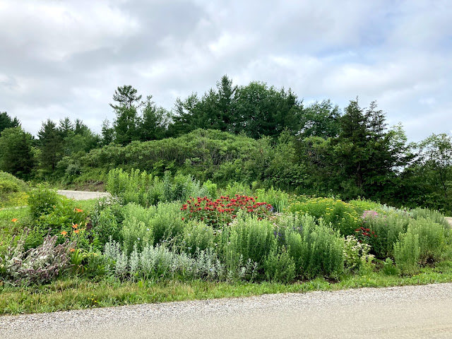
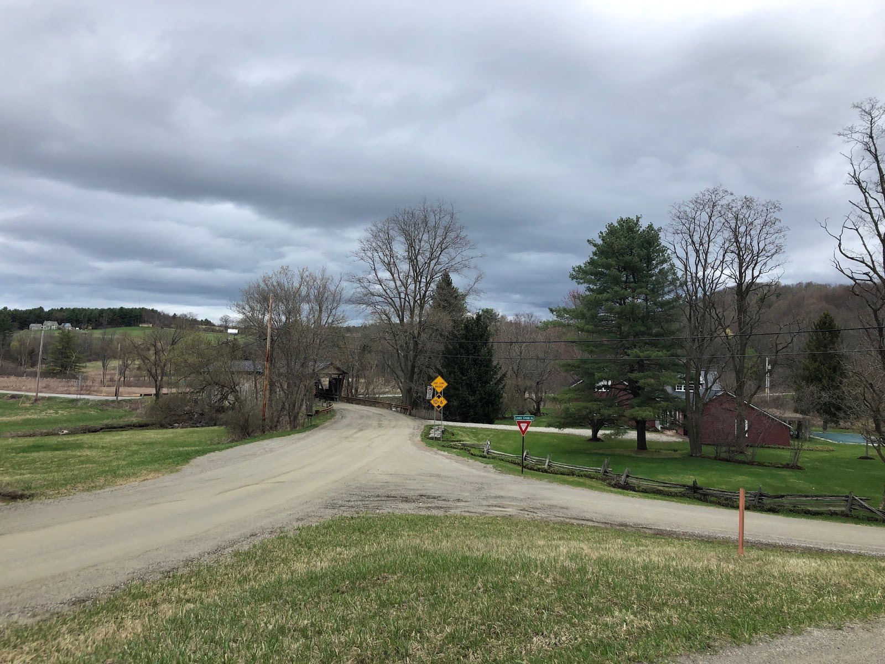
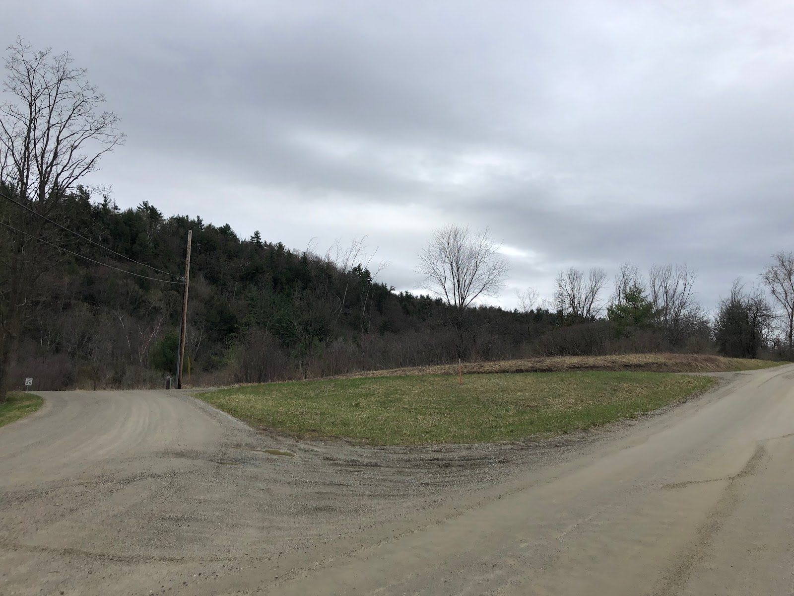

Garden Profile
The Butterfly Garden at Quinlan Covered Bridge

The butterfly garden at Quinlan Covered Bridge is designed to support butterflies and pollinators throughout their entire lifecycle. There are multiple host plants for eggs and larva and food essentials for adult butterflies, including some great annuals. Our community has transformed a barren patch of land at the intersection of Lewis Creek road into a pollinator paradise. This garden is located at the intersection where Lewis Creek runs under the well-known Quinlan Covered Bridge. Come stop by and smell the flowers! For frequent updates on this project and garden information follow this garden on Instagram!
Established in the spring of 2019, the Butterfly Garden at the Quinlan Bridge features six of Vermont’s Threatened and Endangered Species List species of plants. Please consider including these plants and other native plants in your own pollinator garden. Why is this important? Getting to know threatened and endangered plants when you are out and about in the woods and exploring fields helps protect their dwindling populations. The plants listed below should not be removed from the wild and if you are interested in planting them in your garden, source them from local nurseries. All of the plants at the Quinlan Bridge have been responsibly sourced.
Some of the threatened and endangered native plants at this garden include:
Veronicastrum virginicum (Culver’s Root)
Asclepias tuberosa (Butterfly Weed)
Agastache Scrophulariaefolia (Giant Purple Hyssop)
Asclepias verticillata (Whorled Milkweed)
Phcnanthemum var. pilosum (Hairy Mountain Mint)
Physotegia virginiana (Obedient Plant)
Community Impact:
This garden has been generously supported by the many garden enthusiasts of the town of Charlotte. The pollinator garden would not be possible without the support of the neighbors of Monkton rd and Lewis Creek, who share their time, energy, and resources to make this possible. We are working together to decrease the amount of refuse along our roads, learning to drive a little slower, and promoting the presence of wildlife and pollinators. The children who live on Monkton road and Lewis Creek are learning about the importance of preserving our landscape and take part in a project that helps support our wildlife residents.
Extension Master Gardener Site:
The Butterfly Garden at the Quinlan Bridge is an EMG site! If you are interested in filling some volunteer hours, please consider helping out at this pollinator garden. Email: Julie (Julia Parker-Dickerson) at jgardensvt@gmail.com
Looking to help?
Interested in contributing to the project? I will happily accept plant donations and divides. All donations will go towards plantings that support pollinators at this location. If you are interested in a monetary contribution consider gift certificates to local nurseries like Red Wagon Plants and Horsford.
Plant List
Perennials: listed alphabetically by latin name
Agastache Scrophulariaefolia (Giant Purple Hyssop) E
Anise Hyssop
Artemisia ‘Absinthium’
Alcea rosea (hollyhock)
Ascelpias Incarnata (swamp milkweed)
Ascelpias Incarnata ‘Ice Ballet’ (swamp milkweed)
Asclepias syriaca (Common Milkweed)
Ascelpias Tuberosa (Butterfly Weed) E
Asclepias verticillata (Whorled Milkweed) E
Belamcanda chinensis (Blackberry Lily)
Baptisia Australis (False Indigo)
Cranesbill ‘Biokovo karmima’
Diathus (Cheddar Pink)
Echinacea purpurea (purple coneflower)
Gentiana Lutea (Gentian)
Iris germanica (bearded iris)
Lobelia cardinalis (cardinal flower)
Nepeta (catmint)
Mentha spicata (spearmint)
Monarda didyma (bee balm)
Paeonia var. unknown (Peony)
Phcnanthemum var. pilosum (Hairy Mountain Mint) E
Phlox paniculata ‘david’ (summer phlox)
Physotegia virginiana (Obedient Plant) E
Perovskia atriplicifolia (Russian sage)
Pycnanthemum pilosum (Mountain Mint)
Penstemon digitalis
Rudbeckia hirta (black-eyed susan)
Rudbeckia triloba ‘prairie glow’ (brown-eyed susan)
Stachys byzantina (lamb’s ear)
Senna
Tanacetum vulgare ‘Tansy’
Verbena rigida ‘Santos’
Vernonia noveboraconsis (ironweed)
Veronicastrum virginicum (Culver’s Root) E
Zizia
Shrubs:
Cephanlanthus occidentalis (buttonbush)
Clethra alnifolia ‘hummingbird’ (hummingbird summersweet)
Itea x ‘Scentlandia’ (Sweetspire)
Bulbs:
Galanthus
Annuals for 2022 (including edibles):
Zinnias
Cosmos
Sunflowers
Wildlife Visitors:
Monarch butterflies
Swallowtail butterflies (male and female)
Mourning Cloak butterfly
Painted Lady butterflies
Yellow Sulphur Butterfly
Geese family
Robins
Red fox family
Snapping turtles
Bobcat family
Bumblebees
and many many more…
Special thanks to the following for their generous donations:
A truck load of plants from Red Wagon!
Ward Preston, W. Preston LLC. Charlotte, VT
Delivered and donated several trucks of manure
Steven Wisebaum, Champlain Valley Compost, Charlotte, VT
Donated compost
Moe Harvey, Mary Meade, and Patterson Fuels
A generous donation of $250 to Horsford Nursery
Willow Stein, neighbor, Charlotte, VT
Plant donation
Carrie Spear, Town Councilwoman, Spear Street Store, Charlotte, VT
Donation of perennial mums, purple coneflowers
Julie Rubaud, Red Wagon Plants, Shelburne, VT
Donation of multiple truckloads of plants!
Laura Merrell, neighbor
Horse manure
Gwen Kjelleren, family friend
Summersweet shrub, pale pink peony (variety unknown)
Suki Flash, Neverland Farm
Compost
Cathy Hunter, neighbor
Generous amount of plants including: Catmint, poppies, daylily, and more!
Helen Toor, neighbor
Donation of black-eyed susans
Christie Garrett
Donation of variety of pollinator loving perennials
Ernie Pomerleau, Pomerleau Real Estate. Burlington, VT
Before

